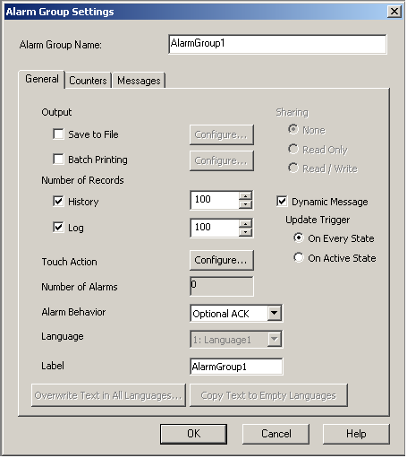
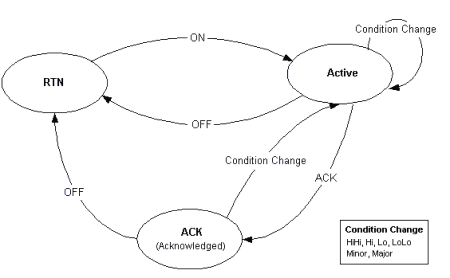
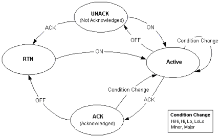
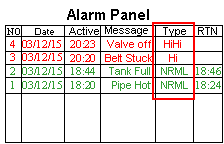
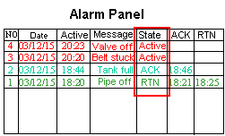

|
|
|
|
|
|
|
|
Create an alarm group.
In the Navigator window, right-click the alarm group and select Settings to open the Alarm Group Settings dialog box.

|
Alarm Group Name |
The alarm group's name. Whenever an alarm group is created, a default name is generated. When renaming an alarm group, its name must be unique within the target, must contain no more than 32 valid characters, and must follow the naming conventions. For more information, see Appendix 9, Naming Conventions. |
|
Output |
Save to File |
To output an alarm message to a .csv file, enable the Save to File checkbox and click the Configure button to display the Save to File dialog box. For more information, see Section 16.3.6, Outputting Alarms and Events to a .CSV File. |
|
Batch Printing |
To print alarm messages, enable the Batch Printing checkbox and click the Configure button to display the Batch Printing dialog box. For more information, see Section 16.3.5, Printing Alarm and Event Messages. |
|
|
Number of Records |
History |
Use this field to set the maximum number of alarm messages displayed at one time in the History Alarm Summary attached to this group.
|
|
Log |
Use this field to set the maximum number of alarm messages displayed in the Log Alarm Summary attached to this group.
|
|
|
Touch Action |
Set up actions to occur when the alarm summary is touched. For more information on touch actions, see Section Specifying Touch Action Settings. |
|
|
Number of Alarms |
Displays the number of alarms associated with the alarm group or alarm category. |
|
|
Alarm Behavior |
Use this field to set alarms to have three states or four states. Select Optional ACK (3-state alarm) or Mandatory ACK (4-state alarm).


|
|
|
Language |
Available when multiple languages are set up in the Language node. Select the Label's language. You can set up a different label for each user language. For more information, see Section 20.2, Switching Languages. |
|
|
Label |
Defines the alarm group's name that displays in both the alarm summary's Group and Filter columns. You can define a different label for each of the available languages. You can enter up to 32 characters for each alarm group name. |
|
|
Defines the alarm group's sharing capabilities.
Sharing is only available when Data Sharing is enabled on the target. For more information on enabling Data Sharing, see Section 4.5.1.5, Remote Access: Data Sharing. |
||
|
Dynamic Message |
Enables you to insert dynamic content into alarm messages. Select On Every State or On Active State to choose the trigger for updating the dynamic message. For more information, see Section 16.3.8, Setting Up Dynamic Messages in Alarms. |
|
|
Overwrite Text in All Languages |
Available when multiple languages are set up in the Language node. Overwrites the text in all languages with the text defined in the Label. For more information, see Section 20.2, Switching Languages. |
|
|
Copy Text to Empty Languages |
Available when multiple languages are set up in the Language node. Copies the text defined in the Label to languages that do not have labels yet. For more information, see Section 20.2, Switching Languages. |
|

Once the alarm summary reaches its maximum number of alarms, the oldest alarm message is deleted and the newest alarm message is added. See Section 16.2.5.1, Severity.
The maximum number of alarm records in a diagnostic alarm group is 1000, defined by the PLC configuration.
You can display and store a maximum of 10,000 History alarm records per alarm group and a maximum of 10,000 Log alarm records per alarm group. When the Alarm node's Backup Alarm Group property is set to Yes, the total number of log and history alarms that you can set up in all the alarm groups is 80,000.
When the Alarm node's Backup Alarm Group property is set to Yes, the number of History and Log alarms you can set up is limited by the amount of SRAM that is available on the target machine. The space required for each alarm is:
Active = 20 bytes
History = 24 bytes
Log = 20 bytes
When Track Users in Alarms is enabled, the above numbers increase by 2 bytes.
For alarm groups with Dynamic Message enabled, the above numbers increase by 2 bytes and the variables and their resulting strings are stored.
To check how much SRAM you have available, run the Validation command on the target and note the SRAM values in the Feedback Zone
The Editor automatically calculates the maximum number of records in the active alarm summary attached to this group by summing up the number of alarms in the group.
|
Current |
Counts the number of active alarms in the alarm group and writes the number to the specified variable. Select the Current checkbox and specify the variable to write to. |
|
Sum |
Provides the cumulative count of active alarms in the system. Select the Sum checkbox and type in the variable to write to.
|
|
Active |
Counts the number of Active alarms that are not Returned to Normal (RTN). To keep an ongoing count of all these alarms, select the Active checkbox and type in the variable to write to. When the alarm behavior is Optional ACK, the Active alarm count is the same as the current alarm count. When the alarm behavior is Mandatory ACK, the Active alarm count includes UNACK alarms. |
|
History |
Counts the number of alarms that have been Active, Acknowledged (ACK), and Returned to Normal (RTN). To keep a count of all these alarms, select the History checkbox and type in the variable to write to. If the alarm behavior is Mandatory ACK, it also counts alarms in the UNACK state. |
|
Log |
The log creates a new record for each alarm state change. The Log counts the number of alarms in the log database. To keep a count of all these log alarms, select the Log checkbox and type in the variable to write to. |
|
Active State |
Counts the number of variables whose alarms are currently in the Active State. It does not count alarms in the RTN, ACK, or UNACK state. To keep a count of all these alarms, select the Active State checkbox and type in the variable to write to. |
|
ACK State |
Counts the number of variables whose alarms are currently in ACK state and still active. To keep a count of all these alarms, select the ACK State checkbox and type in the variable to write to. |
|
UNACK State |
Counts the number of variables whose alarms are currently in UNACK state. To keep a count of all these alarms, select the UNACK State checkbox and type in the variable to write to. |

Alarm groups support all the counters listed. Diagnostic alarm groups support Active, History, and Log counts only. These counts show the number of alarms that are currently available in active, history, and log alarm summary displays.
When communication with the PLC is interrupted and then restored, the target machine:
1) Logs onto the PLC
2) Resets the target's diagnostic alarms by clearing the active, history, and log alarm summary displays and alarm counts. Standard alarms are not cleared, only diagnostic alarms.
3) Reads using Fast Reload, if configured, (see Section 16.3.2.1, Displaying Diagnostic Alarms) the active, acknowledged, and unacknowledged alarms from the PLC's diagnostic buffer.

When a counter is selected, the variable field is enabled. You cannot leave an enabled variable field blank. An error message will be displayed. You also cannot assign the same variable to more than one counter.
The UNACK counter is always listed for an alarm category, even when the category contains an alarm group that has Alarm Behavior set to Optional.
The Messages tab is different for alarm groups and diagnostic alarm groups.
|
Edit in Language |
You can set up Type Messages and State Messages in different languages. Select the language from the drop-down list and then edit the fields. |
|||||
|
Type Messages |
The alarm summary's Type column indicates the alarm type, for example, HI, LOLO,NRML, etc. You can write your own alarm type messages, or use the default ones. Type messages can be up to 32 characters long. 
|
|||||
|
State Messages |
An alarm has four states: Active (ALRM), Acknowledged (ACK), Unacknowledged (UNACK), and Returned to Normal (RTN). You can write your own alarm state message or use the default alarm state message. The Alarm state messages can be up to 32 characters long.  |
|||||
|
Active |
Specify the alarm message to display in the State column when the alarm is Active. The message can be up to 32 characters in length. |
|||||
|
Acknowledged (ACK) |
Specify the alarm message to display in the State column when the alarm is acknowledged (ACK). The message can be up to 32 characters in length. |
|||||
|
Unacknowledged (UNACK) |
Specify the alarm message to display in the State column when the alarm is Unacknowledged (UNACK). The message can be up to 32 characters in length. |
|||||
|
Returned to Normal (RTN) |
Specify the alarm message to display in the State column when the alarm is restored. The message can be up to 32 characters in length. |
|||||

You can also configure the Alarm Group in the Property Inspector.
|
Edit in Language |
You can set up Type Messages and State Messages in different languages. Select the language from the drop-down list and then edit the fields. |
|
Type Messages |
The alarm summary's Type column indicates the source of the alarm:
Type messages can be up to 32 characters long. |
|
State Messages |
An alarm has four states: Active (ACTIVE), Acknowledged (ACK), Unacknowledged (UNACK), and Returned to Normal (RTN). You can write your own alarm state message or use the default alarm state message. Alarm state messages can be up to 32 characters long. |
|
Enable STO File Decoding |
Used with Derived Function Block errors, select if you want to work with the .sto file's status and status messages. These files are downloaded to the target machine. English, French, German, Italian, Spanish, Portuguese, Simplified Chinese, and Traditional Chinese .sto files are available. Which language file to use is defined by the current user language and its Locale. For instructions on setting up .sto files, see Section 16.3.2.3, Displaying Derived Function Block Status Messages: Adding .STO Files. |
|
STO File Path |
Used with Derived Function Block errors, select if you want to work with the .sto file's status and status messages. These files are downloaded to the target machine. English, French, German, Italian, Spanish, Portuguese, Simplified Chinese, and Traditional Chinese .sto files are available. Which language file to use is defined by the current user language and its Locale. For instructions on setting up .sto files, see Section 16.3.2.3, Displaying Derived Function Block Status Messages (Adding STO Files). |
|
STO Message String |
Select Default when using system .sto files. Select Custom Path when using custom .sto files and define the folder location of the .sto files. |